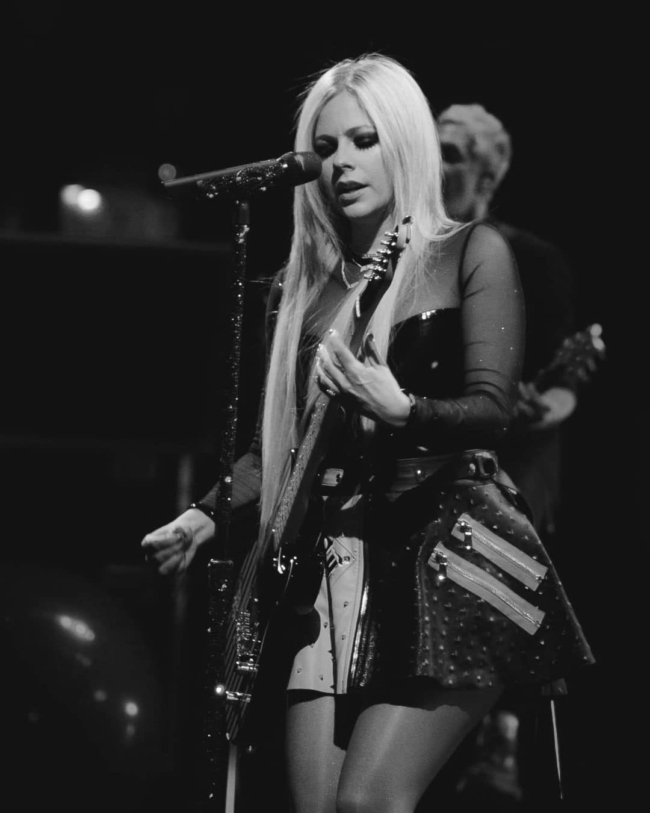

Avril Lavigne

Sobre mi
Soy una cantautora franco-canadiense.
Comencé mi carrera en 2001 y con 17 años fui la
artista mas femenina con más ventas en 2002 y
con el álbum debut más vendido del año.
Discofrafía
Let Go (2002)
Under My Skin(2003)
The Best Damn Thing (2007)
Goodbye Lullaby (2011)
Lavigne (2013)
Head Above Water(2019)
Amor Sux(2022)
Actuación
Sabrina la bruja adolescente (2002)
Going the Distance (2004)
Mighty Moshin' Emo Rangers (2004)
Fast Food Nation (2006)
Vecinos invasores (2006)
El caso Wells (2007)
American Idol (2009)
Majors & Minors (2011)
Charming (2016)
Premios
MTV Video Music Award al Mejor Artista a Seguir (2002)
Mejor Nuevo Artista Internacional (2002)
Premio Juno al Sencillo del Año (2003)
Premio Juno al Artista Revelación del Año (2003)
Premio Juno al Artista del Año (2005)
MTV Europe Music Award a la Canción del Año